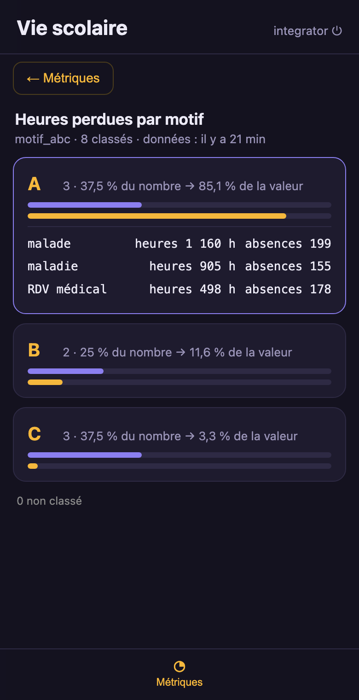

Legacy school software: three medical motives make 85 % of the hours of absence
Goal Know which absence motives carry most of the lesson hours lost over the first term.
A middle school of 420 pupils exports its term's absences, one line per absence. Everybody believes the hours go to unjustified absences. Nobody has summed the hours by motive.
- an A, B, C classing of the motives by hours lost
- the number of absences beside the hours
- « non justifiée », the most frequent motive: in B
absence;eleve_id;classe;date;motif;heures A-00001;E-2017;6e A;2026-09-01;non justifiée;1 A-00002;E-2033;6e A;2026-09-01;maladie;3 A-00003;E-2048;3e D;2026-09-01;malade;7 A-00004;E-2066;6e B;2026-09-01;non justifiée;1 A-00005;E-2089;4e A;2026-09-01;RDV médical;4 A-00006;E-2105;4e A;2026-09-01;non justifiée;1 A-00007;E-2113;6e A;2026-09-01;transport;1 A-00008;E-2119;5e C;2026-09-01;malade;4 A-00009;E-2123;4e C;2026-09-01;malade;3 A-00010;E-2138;4e B;2026-09-01;malade;7 A-00011;E-2160;3e D;2026-09-01;sport compétition;4 A-00012;E-2174;3e B;2026-09-01;RDV médical;3 A-00013;E-2193;6e A;2026-09-01;malade;7 A-00014;E-2206;3e B;2026-09-01;non justifiée;1 A-00015;E-2231;5e C;2026-09-01;malade;4 A-00016;E-2231;5e C;2026-09-01;malade;7 A-00017;E-2242;6e B;2026-09-01;RDV médical;2 A-00018;E-2249;4e A;2026-09-01;maladie;4 A-00019;E-2006;5e B;2026-09-02;non justifiée;1
… 801 more lines
manifests/10-viesco.yaml
apiVersion: connectors.lumnik.io/v1kind: Connectormetadata: name: scenario-college-a connector_type: csv-file scopes: [college-a]spec: transport: kind: sftp host: host.docker.internal port: 2234 user: viesco path: /exports/absences-t1.csv password_env: SCENARIO_COLLEGE_A_SFTP # The fingerprint the school's server presents, read out of band (ssh-keyscan | ssh-keygen -lf -). host_key_fingerprint: "SHA256:FINGERPRINT_READ_AT_REPLAY" parser: has_header: true delimiter: ";" encoding: UTF-8 after_process: none mapping: cell: - parse-number: { column: heures, decimal-separator: "." }manifests/20-absence.yaml
kind: Entityname: ScenarioCollegeAbsencesAmatch: [absence]scopes: [college-a]sources: - table: t_scenario_college_a map: absence: absence eleve_id: eleve_id classe: classe date: date motif: motif heures: heuresmanifests/30-motifs.yaml
apiVersion: apps.lumnik.io/v1kind: Metricmetadata: name: scenario_college_motifs_aspec: scope: college-a title: Heures perdues par motif description: Les motifs d'absence du premier trimestre, classés A, B, C par heures de cours perdues. source: entity: ScenarioCollegeAbsencesA by: [motif] # the motive as typed at the desk: no pupil reaches the metric measures: heures: { sum: heures, unit: h } absences: { count: rows } across: motif_abc: { preset: abc, of: heures } # pareto by hours: A, the motives of the first 80 % of the hours$ lm apply -f 10-viesco.yaml
Applied connector "scenario-college-d1127" — 1 endpoint
$ lm connector run scenario-college-d1127
run scheduled: d686442f-90ac-421e-9eac-66f25bf90934
$ lm run get d686442f-90ac-421e-9eac-66f25bf90934 --wait-evaluated
ID CONNECTOR ENDPOINT STATUS IN OUT SKIPPED DEAD-LETTERS STARTED ENDED EVALUATED
d686442f scenario-college-d1127 default Completed 820 820 0 0 2026-11-27 21:24 2026-11-27 21:24 yes
$ lm entity apply -f 20-absence.yaml
Applied entity "ScenarioCollegeAbsencesD1127" → connector."v_scenariocollegeabsencesd1127"
$ lm metric apply -f 30-motifs.yaml
Applied metric "scenario_college_motifs_d1127" (definition version 1)- run
- IN 820 · OUT 820 · cell errors 0
evidence: replay.log, 00-check-pareto.txt, 01-run.json, 05-class-a.json, 04-metric.txt · transform v1
$ lm metric get scenario_college_motifs_d1127
Heures perdues par motif
MOTIF HEURES ABSENCES MOTIF_ABC MOTIF_ABC_BEFORE MOTIF_ABC_COUNT MOTIF_ABC_COUNT_SHARE MOTIF_ABC_SHARE MOTIF_ABC_POPULATION MOTIF_ABC_UNCLASSIFIED _DISPUTED
convocation 22 9 C 98.6378737541528239 3 37.5000000000000000 3.2890365448504983 8 0 0
famille 112 19 B 92.9900332225913621 2 25.0000000000000000 11.5614617940199336 8 0 0
malade 1160 199 A 0 3 37.5000000000000000 85.1495016611295681 8 0 0
maladie 905 155 A 38.5382059800664452 3 37.5000000000000000 85.1495016611295681 8 0 0
non justifiée 236 210 B 85.1495016611295681 2 25.0000000000000000 11.5614617940199336 8 0 0
RDV médical 498 178 A 68.6046511627906977 3 37.5000000000000000 85.1495016611295681 8 0 0
sport compétition 19 6 C 99.3687707641196013 3 37.5000000000000000 3.2890365448504983 8 0 0
transport 58 44 C 96.7109634551495017 3 37.5000000000000000 3.2890365448504983 8 0 0
heures: h
motif_abc_before: %
motif_abc_count_share: %
motif_abc_share: %
heures = sum(heures), by motif
absences = count(rows), by motif
motif_abc = pareto(heures, bounds [80, 95], labels [A, B, C]) over every group, prior mass, null and ≤ 0 unclassified
data as of: 2026-11-27T20:24:33.543169Z (last completed run)- A · malade
- 1160 h · 199 absences
- A · maladie
- 905 h · 155 absences
- A · RDV médical
- 498 h · 178 absences
- share A
- 85.15 %
- share B
- 11.56 %
- share C
- 3.29 %
- B · non justifiée
- 236 h · 210 absences
- check_pareto.py
- RDV médical · malade · maladie
evidence: replay.log, 00-check-pareto.txt, 01-run.json, 05-class-a.json, 04-metric.txt · transform v1

Limits
- No synonym is detected: lumnik shows three motives side by side in A; it does not say they are one cause and merges nothing. If the school decides so, a lookup at the door writes one motive.
- Hours as declared: lumnik does not recompute them from the timetable.
- No pupil: the metric says neither who is absent nor which pupil to follow.
- No trend: one term as one total. Motives entering or leaving A wait for the metrics' history.
- 420 pupil ids and 820 absences, synthetic.
This scenario runs on lumnik Open, free and open source.
Try lumnik Open →